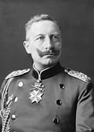
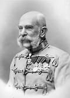

PERSONAJES IMPORTANTES
Estos son algunos de los presonajes mas importantes
¿Porque son importantes
1. Francisco Fernando de Austria Importancia: Su asesinato en Sarajevo en 1914 fue el evento detonante que inició la guerra. Era heredero del Imperio Austrohúngaro.
2. Guillermo II de Alemania Importancia: Emperador alemán que impulsó una política militarista y expansionista. Su apoyo a Austria-Hungría fue clave para escalar el conflicto.
3. Woodrow Wilson Importancia: Presidente de EE. UU. durante la guerra. En 1917, llevó a su país al conflicto. Propuso los Catorce Puntos y promovió la creación de la Liga de las Naciones.
4. Georges Clemenceau Importancia: Primer ministro de Francia. Fue uno de los líderes más duros en el Tratado
| Nombre |
|---|
| Francisco Fernando de Austria |
| Guillermo II de Alemania |
| Woodrow Wilson |
| Georges Clemenceau |
| David Lloyd George |
| Vladimir Lenin |
| Nicolás II de Rusia |
| Paul von Hindenburg |
